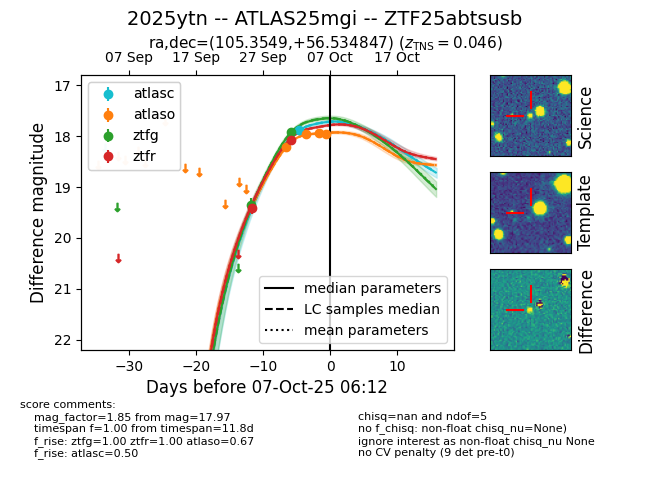
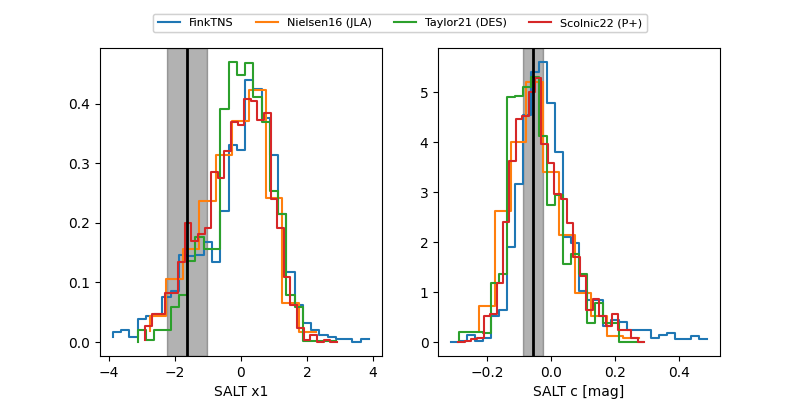

FINK: ZTF25abtsusb
Lasair: ZTF25abtsusb
ALeRCE: ZTF25abtsusb
TNS: 2025ytn
YSE: 2025ytn
ZTF25abtsusb (ztf,fink)
2025ytn (tns,yse)
ATLAS25mgi (atlas)
equatorial (ra, dec) = (105.3549,+56.53485)
galactic (l, b) = (159.9161,+23.68822)


last atlasc=17.88, atlaso=17.97, ztfg=17.93, ztfr=18.08
1 atlasc, 4 atlaso, 2 ztfg, 2 ztfr detections